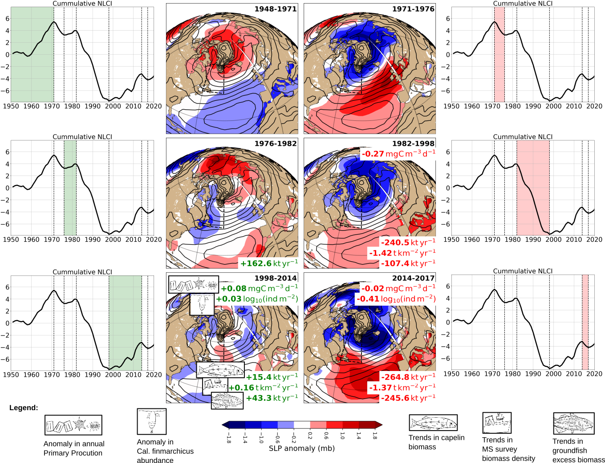

Graduate studies opportunity
MSc opportunity in oceanography - Linking physical oceanography and fisheries acoustics at a long-term monitoring stationPhD opportunity in oceanography - The role of the northwest Atlantic boundary current in the meridional overturning circulation If you are a scientist with strong technical computer skills interested in bridging oceanography and fisheries, you can also contact me directly. |
Some recent research projects |
The influence of climate on ecosystems |

Maps of the sea level pressure (SLP) anomalies over the North Atlantic for 6 different climate phases periods (1948-1971, 1971-1976, 1976-1982, 1982-1998, 1998-2014 and 2014-2017). These are recalled in a side panel showing the cummulative sum of the NL Climate Index (NLCI Cumsum; black curve) with green/red shades showing the period of interest. Anomalies in the annual primary production above the NW Atlantic and Calanus finmarchicus density on the NL shelves are shown in the top of each SLP panel (where available). The trends in capelin biomass, multi-species bottom trawl survey biomass density, and groundfish biomass are indicated in the bottom of SLP panels (see legend). The anomalies and trends have been highlighted in green and red for positive and negative, respectively. Figure from Cyr et al. (2024). |
Physical Biogeochemical interactions in the NW Atlantic |
Maps of surface and bottom pH and saturation state of aragonite (Ωarg) and calcite (Ωcal) for fall 2017. Figure from Gibb et al. (2023).. |
Newfoundland and Labrador ocean climate |
Newfoundland and Labrador climate index derived by summing, in a stacked bar plot, the normalized anomalies of various time series presented in this report. The time series (which start in 1950 unless specified) used for the climate index are as follows: winter NAO index, the air temperature at 5 sites (St. John's, Bonavista, Cartwright, Iqluit and Nuuk), the sea ice season duration and total volume on the Labrador and Newfoundland shelves (starts in 1969), the number of icebergs, SSTs of the NW Atlantic (starts in 1982), vertically-averaged temperature and salinity at Station 27, CIL mean temperature and core temperature at Station 27, the summer CIL volume along hydrographic sections Seal Island, Bonavista and Flemish, and the spring and fall bottom temperature in NAFO divisions 3LNOPs and 2J3KLNO, respectively (both start in 1980). |
Atlantic Zone Monitoring Program |
A map of the Northwest Atlantic ocean (A), including some of the hydrographic sections under the responsability of DFO-NL. The grey lines show the NAFO Divisions, black arrows show the movement of ocean currents, and the red dots indicate three transects presented on the right panels. The average summer temperature over the period 1995-2018 is shown for each transect (B) Seal Island (SI), (C) Bonavista Bay (BB), and (D) Southeast Grand Banks (SEGB). A thick black line shows the 0°C isotherm delimiting the Cold Intermediate Layer (CIL) for each transect. The CIL is a key element of the NL ecosystem influencing multiple fish populations. Figure from Aune et al. (2024). |
MiniFluo-UV and SeaExplorer glider |

Poster presented at the European Geoscience Union conference in Vienna (April 2017). |
Trapped diurnal tides - Rockall Bank |
 Arrival of a deep bore shoaling on the slopes of Rockall bank (sequence from a moored thermistor chain, 12-h period). |
Turbulent mixing in the Lower St. Lawrence Estuary |
Turbulent mixing and turbulent vertical nitrate fluxes at a sill. The shear (S2, top) from an ADCP and the dissipation rates of TKE (middle) are presented. Enlargement of the middle plot where nitrate fluxes are presented in the bottom panel over the ADCP echogram. Note that for a better visualization, the bottom plot is scaled differently from other plots and only one cast out of two is presented. |